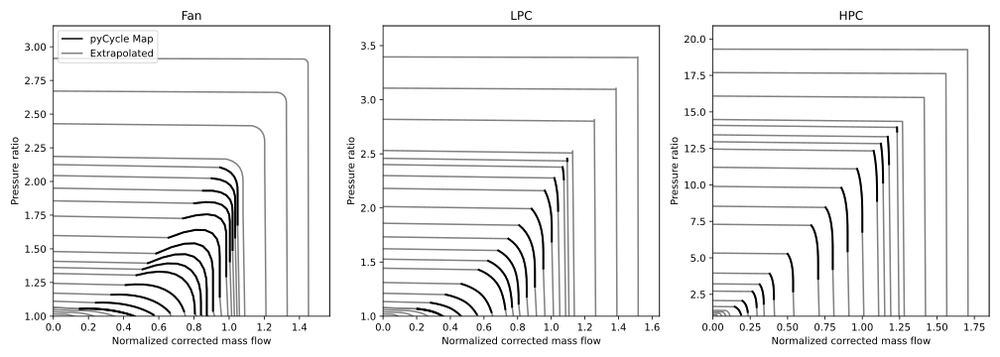
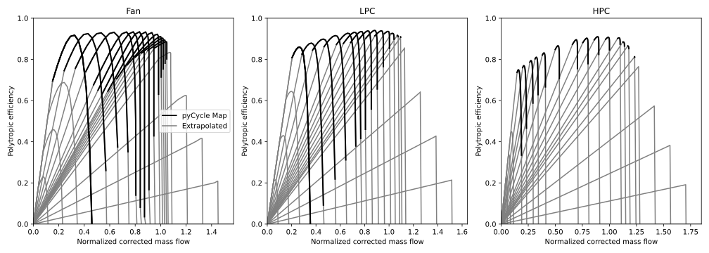

Propulsion system
TASOPT.jl supports multiple propulsion system weight and performance options. Currently implemented are a simple engine with a fixed specific fuel consumption, a detailed model of a turbofan engine, and auxiliary models for novel aircraft leveraging cryogenic hydrogen. Other engine models can be added following the TASOPT.Engine interface object.
Constant TSFC engine
A simpler engine option is provided, consisting of an engine with a user-specified specific fuel consumptions (TSFC). As this engine is not physically sized, its weight has to be computed either as a fraction of the total maximum takeoff weight or directly specified. This engine options is also not compatible with takeoff calculations, as these are done at maximum throttle setting.
The constant TSFC engine can be called through constant_TSFC_engine!(). It uses calculate_thrust_from_ROC!() to calculate the thrust required in climb from a given rate of climb.
Turbofan model
TASOPT.engine.tfcalc! — Function
tfcalc!(wing, engine, parg, para, pare, ip, ifuel, opt_calc_call, opt_cooling, initializes_engine)Calls on-design sizing function tfsize! or off-design analysis function tfoper! for one operating point ip.
🔃 Inputs and Outputs
Input:
opt_calc_call:- "sizing": call on-design sizing routine
tfsize! "oper_fixedTt4": call off-design analysis routinetfoper!with specified Tt4"oper_fixedFe": call off-design analysis routinetfoper!with specified net thrust (Fe)
- "sizing": call on-design sizing routine
opt_cooling: turbine cooling flag- "none": no cooling mass flow
"fixed_coolingflowratio": use specified cooling flow ratiosepsrow(.); calculateTmrow(.)"fixed_Tmetal": use specified metal temperaturesTmrow(.); calculateepsrow(.)
initializes_engine:true: initialize variables for iteration intfoper!false: use current variables as initial guesses intfoper!
TASOPT.engine.tfsize! — Function
tfsize!(gee, M0, T0, p0, a0, M2, M25,
Feng, Phiinl, Kinl, eng_has_BLI_cores,
BPR, pif, pilc, pihc,
pid, pib, pifn, pitn,
Ttf, ifuel, etab,
epf0, eplc0, ephc0, epht0, eplt0,
mofft, Pofft,
Tt9, pt9, Tt4,
epsl, epsh,
opt_cooling,
Mtexit, dTstrk, StA, efilm, tfilm,
fc0, epht_fc,
M4a, ruc,
ncrowx, ncrow,
epsrow, Tmrow,
Δh_PreC, Δh_InterC, Δh_Regen, Δh_TurbC,
Δp_PreC, Δp_InterC, Δp_Regen)Turbofan performance and sizing routine.
Calculation procedure follows that of Kerrebrock, but the usual gas property formulas are replaced by function calls (described in Gas Calculations), which can therefore implement more general gas models. In addition, a turbine cooling model is added.
🔃 Inputs and Outputs
Inputs:
gee: gravity accelerationM0: freestream MachT0: freestream temperature [K]p0: freestream pressure [Pa]M2: fan-face Mach numberM25: HPC-face Mach numberFeng: required net thrust (PKinl+PKout-Phi_jet)/u0 = sum( mdot u)Phiinl: inlet ingested dissipationeng_has_BLI_cores: false=core in clear flow, true=core seesPhiinlBPR: bypass ratio =mdot_fan/mdot_corepif: fan pressure ratio ( = pt7 /pt2)pilc: LP comp pressure ratio ( = pt25/pt2)pihc: HP comp pressure ratio ( = pt3 /pt25)pid: diffuser pressure ratio ( = pt2 /pt0)pib: burner pressure ratio ( = pt4 /pt3)pifn: fan nozzle pressure ratio ( = pt7/pt2.1)pitn: turbine nozzle pressure ratio ( = pt5/pt4.9)Ttf: fuel temperature entering combustorifuel: fuel index, see functiongasfunhvap: fuel enthalpy of vaporization (J/kg)etab: combustor efficiency (fraction of fuel burned)epf0: fan max polytropic efficiencyeplc0: LPC max polytropic efficiencyephc0: HPC max polytropic efficiencyepht0: HPT max polytropic efficiencyeplt0: LPT max polytropic efficiencymofft: mass flow offtake at LPC discharge station 2.5Pofft: low spool power offtakeTt9: offtake air discharge total temperaturept9: offtake air discharge total pressureepsl: low spool power loss fractionepsh: high spool power loss fractionopt_cooling: turbine cooling flag"none"= no cooling, ignore all cooling parameters below"fixed_coolingflowratio"= usual cooling, using passed-in fcool"fixed_Tmetal"= usual cooling, but set (and return)fcoolfromTmetal
Mtexit: turbine blade-row exit Mach, for setting temperature dropsdTstrk: hot-streak temperature delta [K], used only ifopt_cooling="fixed_Tmetal"StA: area-weighted Stanton number , used only ifopt_cooling="fixed_Tmetal"M4a: effective Mach at cooling-flow outlet (start of mixing)ruc: cooling-flow outlet velocity ratio, u/uencrowx: dimension of epsrow arrayncrow: number of blade rows requiring coolingepsrow(.): specified cooling-flow bypass ratio ifopt_cooling="fixed_coolingflowratio"Tmrow(.): specified metal temperature [K] ifopt_cooling="fixed_Tmetal"
Outputs:
epsrow(.): resulting cooling-flow bypass ratio ifopt_cooling="fixed_Tmetal"Tmrow(.): resulting metal temperature [K] ifopt_cooling="fixed_coolingflowratio"TSFC: thrust specific fuel consumption =mdot_fuel g / F[1/s]Fsp: specific thrust =F / (mdot u0) = F / ((1+BPR) mdot_core u0)hfuel: fuel heating value [J / kg K]ff: fuel mass flow fraction =mdot_fuel / mdot_coremcore: core mass flow =mdot_core[kg/s]A2: fan-face area [m^2]A25: HPC-face area [m^2]A5: core nozzle area [m^2]A7: fan nozzle area [m^2]A6: core plume area [m^2]A8: fan plume area [m^2]Tt?: total temperatureht?: total complete enthalpy (includes heat of formation)pt?: total pressurecpt?: specific heat at stagnation temperature (=dh/dT)Rt?: gas constant at stagnation conditionsT?: static temperatureu?: velocityepf: fan polytropic efficiencyeplc: LPC polytropic efficiencyephc: HPC polytropic efficiencyepht: HPT polytropic efficiencyeplt: LPT polytropic efficiencyetaf: fan overall efficiencyetalc: LPC overall efficiencyetahc: HPC overall efficiencyetaht: HPT overall efficiencyetalt: LPT overall efficiencyLconv:trueif convergence was successful,falseotherwise
The "?" symbol denotes the station index:
- 0: freestream
- 18: fan face outside of casing BLs
- 19: fan face over LPC portion
- 2: fan face over fan portion
- 21: fan exit
- 25: LPC exit, HPC inlet
- 3: compressor exit
- 4: combustor exit before cooling air addition
- 41: turbine inlet after cooling air addition
- 45: HPT exit, LPT inlet
- 49: LPT exit
- 5: core nozzle
- 6: core flow downstream
- 7: fan nozzle
- 8: fan flow downstream
TASOPT.engine.tfweight — Function
tfweight(ac)Engine weight estimation function using Giulia Pantalone, Drela, or Fitzgerald model.
Turbofan Maps
TASOPT.engine.Ncmap — Method
Ncmap(pratio, mb, piD, mbD, NbD, Cmap)Calculates compressor or fan corrected speed as a function of pressure ratio and corrected mass flow
TASOPT.engine.ecmap — Method
ecmap(pratio, mb, piD, mbD, Cmap, effo, piK, effK)Calculates compressor or fan efficiency as a function of pressure ratio and corrected mass flow
TASOPT.engine.Ncmap1 — Method
Ncmap1(pratio, m, piD, mbD, NbD, ABCDm, iabcd, Tr, pr)Calculates compressor or fan efficiency as a function of pressure ratio and corrected mass flow
TASOPT.engine.ecmap1 — Method
ecmap1(pratio, m, piD, mbD, ABCDm, iabcd, effo, Tr, pr)Calculates compressor or fan efficiency as a function of pressure ratio and mass flow
TASOPT.engine.etmap — Method
etmap(dh, mb, Nb, piD, mbD, NbD, ept0, Tmap, Tt, cpt, Rt)Calculates turbine efficiency as a function of work and corrected mass flow
TASOPT.engine.Pimap — Method
Pimap(mb, Nb, piD, mbD, NbD, Cmap)Calculates compressor or fan pressure ratio as a function of pressure ratio and corrected mass flow
TASOPT.engine.tfoper! — Function
function tfoper!(gee, M0, T0, p0, a0, Tref, pref,
Phiinl, Kinl, eng_has_BLI_cores,
pid, pib, pifn, pitn,
Gearf,
pifD, pilcD, pihcD, pihtD, piltD,
mbfD, mblcD, mbhcD, mbhtD, mbltD,
NbfD, NblcD, NbhcD, NbhtD, NbltD,
A2, A25, A5, A7,
opt_calc_call,
Ttf, ifuel, etab,
epf0, eplc0, ephc0, epht0, eplt0,
mofft, Pofft,
Tt9, pt9,
epsl, epsh,
opt_cooling,
Mtexit, dTstrk, StA, efilm, tfilm,
M4a, ruc,
ncrowx, ncrow,
epsrow, Tmrow,
Feng,
M2, pif, pilc, pihc, mbf, mblc, mbhc, Tt4, pt5, mcore, M25)Turbofan operation routine. Calculation procedure follows that of Kerrebrock, but the usual gas property formulas are replaced by function calls, which can therefore implement more general gas models. In addition, a turbine cooling model is added.
The gas routines are described in Gas Calculations
🔃 Inputs and Outputs
Inputs:
gee: gravity accelerationM0: freestream MachT0: freestream temperature [K]p0: freestream pressure [Pa]Tref: reference temperature for corrected mass flow and speedpref: reference pressure for corrected mass flowPhiinl: inlet ingested dissipationPhi_inleng_has_BLI_cores:false: core in clear flowtrue: core seesPhiinl
pid: diffuser pressure ratio ( =pt2/pt0)pib: burner pressure ratio ( =pt4/pt3)pifn: fan nozzle pressure ratio ( =pt7/pt6.9)pitn: turbine nozzle pressure ratio ( =pt5/pt4.9)Gearf: fan gear ratio ( = Nl/Nf )pifD: design fan pressure ratio ( =pt21/pt2)pilcD: design LPC pressure ratio ( =pt25/pt19)pihcD: design HPC pressure ratio ( =pt3/pt25)pihtD: design HPT pressure ratio ( =pt45/pt41)piltD: design LPT pressure ratio ( =pt49/pt45)mbfD: design corrected fan mass flow ( =mf*sqrt(Tt2/Tref)/(pt2/pref)) wheremf = mc*BPRmblcD: design corrected LPC mass flow ( =mc*sqrt(Tt19/Tref)/(pt19/pref))mbhcD: design corrected HLC mass flow ( =mc*sqrt(Tt25/Tref)/(pt25/pref))mbhtD: design corrected HPT mass flow ( =mt*sqrt(Tt41/Tref)/(pt41/pref)) wheremt = mc*(1+ff)mbltD: design corrected LPT mass flow ( =mt*sqrt(Tt45/Tref)/(pt45/pref))NbfD: design corrected fan speed ( =Nf/sqrt(Tt2/Tref))NblcD: design corrected LPC speed ( =Nl/sqrt(Tt19/Tref))NbhcD: design corrected HPC speed ( =Nh/sqrt(Tt25/Tref))NbhtD: design corrected HPT speed ( =Nh/sqrt(Tt41/Tref))NbltD: design corrected LPT speed ( =Nl/sqrt(Tt45/Tref))A2: fan-face area [m^2]A25: HPC-face area [m^2]A5: core nozzle area [m^2]A7: fan nozzle area [m^2]opt_calc_call:"oper_fixedTt4":Tt4is specified"oper_fixedFe":Fengis specified
Tt4: turbine-inlet total temperature [K]Ttf: fuel temperature entering combustorifuel: fuel index, see functiongasfunhvap: fuel enthalpy of vaporization (J/kg)etab: combustor efficiency (fraction of fuel burned)epf0: max fan polytropic efficiencyeplc0: LPC max polytropic efficiencyephc0: HPC max polytropic efficiencyepht0: HPT max polytropic efficiencyeplt0: LPT max polytropic efficiencymofft: mass flow offtake at LPC discharge station 2.5Pofft: low spool power offtakeTt9: offtake air discharge total temperaturept9: offtake air discharge total pressureepsl: low spool power loss fractionepsh: high spool power loss fractionopt_cooling: turbine cooling flag"none": no cooling, ignore all cooling parameters below"fixed_coolingflowratio": usual cooling, using passed-infcool"fixed_Tmetal": usual cooling, but set (and return)fcoolfromTmetal
Mtexit: turbine blade-row exit Mach, for setting temperature dropsTmetal: specified metal temperature [K], used only ifopt_cooling="fixed_Tmetal"dTstrk: hot-streak temperature delta {K}, used only ifopt_cooling="fixed_Tmetal"StA: area-weighted Stanton number , used only ifopt_cooling="fixed_Tmetal"M4a: effective Mach at cooling-flow outlet (start of mixing)ruc: cooling-flow outlet velocity ratio,u/uencrowx: dimension ofepsrowarrayncrow: number of blade rows requiring coolingepsrow(.): input specified cooling-flow bypass ratio ifopt_cooling="fixed_coolingflowratio"; output resulting cooling-flow bypass ratio ifopt_cooling="fixed_Tmetal".Tmrow(.): input specified metal temperature [K] ifopt_cooling="fixed_Tmetal"; output resulting metal temperature [K] ifopt_cooling="fixed_coolingflowratio"
Output:
epsrow(.): see aboveTmrow(.): see aboveTSFC: thrust specific fuel consumption =mdot_fuel g / F[1/s]Fsp: specific thrust =F / (mdot u0) = F / ((1+BPR) mdot_core u0)hfuel: fuel heating value [J / kg K]ff: fuel mass flow fraction =mdot_fuel / mdot_coreFeng: net effective thrust =(PK_inl+PK_out-Phi_jet)/u0 = sum(mdot u)mcore: core mass flow =mdot_core[kg/s]BPR: bypass ratio =mdot_fan/mdot_coreTt?: total temperatureht?: total complete enthalpy (includes heat of formation)pt?: total pressurecpt?: specific heat at stagnation temperature (=dh/dT)Rt?: gas constant at stagnation conditionsT?: static temperatureu?: velocityetaf: fan overall efficiencyetac: compressor overall efficiencyetatf: fan-turbine overall efficiencyetatc: comp-turbine overall efficiencyLconv:trueif convergence was successful,falseotherwise
The "?" symbol denotes the station index:
- 0: freestream
- 18: fan face outside of casing BLs
- 19: fan face over LPC portion
- 2: fan face over fan portion
- 21: fan exit, precooler inlet
- 19c: precooler outlet, LPC inlet
- 25: LPC exit, intercooler inlet
- 25c: intercooler exit, HPC inlet
- 3: compressor exit
- 4: combustor exit before cooling air addition
- 41: turbine inlet after cooling air addition
- 45: HPT exit, LPT inlet
- 49: LPT exit, regenerative cooler inlet
- 49c: regenerative cooler outlet
- 5: core nozzle
- 6: core flow downstream
- 7: fan nozzle
- 8: fan flow downstream
Turbofan Cooling
TASOPT.engine.mcool — Method
mcool(ncrowx, Tmrow, Tt3, Tt4, dTstreak, Trrat, efilm, tfilm, StA)Calculates cooling mass flow requirement.
🔃 Inputs and Outputs
Inputs:
ncrowx: dimension ofTmrow(.)andepsrow(.)arrays (max number of blade rows)Tmrow(.): design metal temperature for each blade rowTt3: cooling flow temperatureTt4: hot gas temperature from burnerdTstreak: hot-streak temperature increase over Tt4, for first blade rowTrrat: static temperature ratio across each blade row, T4.1 / T4efilm: cooling efficiency =(Tco-Tci)/(Tmetal-Tci)tfilm: film effectiveness =(Tgas-Tfaw)/(Tgas-Tco)whereTco= temperature of cooling air exiting bladeTci= temperature of cooling air entering bladeTfaw= film adiabatic wall temperature (for insulated-wall case)
- StA
: area-weighted external Stanton number =St (Asurf/Aflow) cpgas/cpcool`
Output:
ncrow: number of blade rows which need coolingepsrow(.): cooling mass flow ratio for each blade row,m_c_row/m_air
TASOPT.engine.Tmcalc — Method
Tmcalc(ncrowx, ncrow, Tt3, Tt4, dTstreak, Trrat, efilm, tfilm, StA, epsrow)Calculates metal temperature for blade row
🔃 Inputs and Outputs
Inputs:
ncrowx: dimension of Tmrow(.),epsrow(.) arrays (max number of blade rows)ncrow: number of blade rows which are cooledepsrow(.): cooling mass flow ratio for each blade row, mcrow/m_airTt3: cooling flow temperatureTt4: hot gas temperature from burnerdTstreak: hot-streak temperature increase over Tt4, for first blade rowTrrat: static temperature ratio across each blade row, T4.1 / T4efilm: cooling efficiency = (Tco-Tci)/(Tmetal-Tci)tfilm: film effectiveness = (Tgas-Tfaw)/(Tgas-Tco) Tco = temperature of cooling air exiting blade Tci = temperature of cooling air entering blade Tfaw = film adiabatic wall temperature (for insulated-wall case)StA: area-weighted external Stanton number = St (Asurf/Aflow) cpgas/cpcoolOutput:Tmrow(.): design metal temperature for each blade row
Turbomachinery Components
The compressor off-design performance is determined by interpolation to the compressor maps in pyCycle[1]. The compressor parameters are scaled to the design pressure ratios, speeds, and mass flow rates in the pyCycle maps by using
\[ \tilde{p} = \frac{\pi -1}{\pi_D -1}\]
\[ \tilde{m} = \frac{\bar{m}}{\bar{m}_D}\]
\[ \tilde{N} = \frac{\bar{N}}{\bar{N}_D},\]
where $\pi$ represents the pressure ratio, $\bar{m}$ is the corrected mass flow rate, $\bar{N}$ is the corrected speed, and the subscript $D$ denotes the design values. For a given set of compressor parameters, the normalized parameters $\tilde{p}$, $\tilde{m}$, and $\tilde{N}$ are used to calculate the dimensional values in the pyCycle map space.
The pyCycle maps contain data for pressure ratio, corrected mass flow rate, and isentropic efficiency as a function of corrected speed and R-line parameter. However, the turbofan operation function, tfoper!(), is set up so that the polytropic efficiency and corrected speed is calculated from the pressure ratio and corrected mass flow rate. Therefore, a reverse interpolation problem is required to compute these parameters. For this, the compressor maps are extrapolated and a standard non-linear solver is used in find_NR_inverse_with_derivatives() to calculate the corrected speed and R-line parameter that correspond to given corrected mass flow rate and pressure ratio. The extrapolated pressure ratio and polytropic efficiency maps are shown below. These parameters are then translated to the scaled map by using $\tilde{p}$, $\tilde{m}$, and $\tilde{N}$ in calculate_compressor_speed_and_efficiency(), which also returns the polytropic efficiency and derivatives.
 
TASOPT.engine.calculate_compressor_speed_and_efficiency — Function
calculate_compressor_speed_and_efficiency(map, pratio, mb, piD, mbD, NbD, epol0; Ng=0.5, Rg=2.0)Calculates corrected speed and polytropic efficiency for a compressor, along with derivatives to pressure ratio and mass flow.
🔃 Inputs and Outputs
Inputs:
map::CompressorMap: structure containing the compressor map and interpolations.pratio::Float64: compressor pressure ratio.mb::Float64: current mass flow rate.piD::Float64: design pressure ratio.mbD::Float64: design mass flow rate.NbD::Float64: design rotational speed.epol0::Float64: maximum polytropic efficiency.Ng::Float64: initial guess for normalized speed (optional).Rg::Float64: initial guess for R-line (optional).
Outputs:
Nb::Float64: corrected compressor speed.epol::Float64: polytropic efficiency.dNb_dpi::Float64: derivative of corrected speed w.r.t.piD.dNb_dmb::Float64: derivative of corrected speed w.r.t.mb.depol_dpi::Float64: derivative of efficiency w.r.t.piD.depol_dmb::Float64: derivative of efficiency w.r.t.mb.N::Float64: matched normalized speed.R::Float64: matched R-line.
TASOPT.engine.find_NR_inverse_with_derivatives — Function
find_NR_inverse_with_derivatives(itp_Wc, itp_PR, Wc_target, PR_target; Ng=0.5, Rg=2.0)Finds the normalized speed N and R-line R corresponding to a target corrected mass flow Wc_target and pressure ratio PR_target, using a nonlinear solver with Jacobian information from interpolation gradients.
🔃 Inputs and Outputs
Inputs:
itp_Wc::GriddedInterpolation: interpolation of corrected mass flow over (N, R).itp_PR::GriddedInterpolation: interpolation of pressure ratio over (N, R).Wc_target::Float64: target corrected mass flow.PR_target::Float64: target pressure ratio.Ng::Float64: initial guess for normalized speed (optional).Rg::Float64: initial guess for R-line (optional).
Outputs:
N::Float64: normalized speed at the matched point.R::Float64: R-line value at the matched point.dN_dw::Float64: ∂N/∂WcdN_dpr::Float64: ∂N/∂PRdR_dw::Float64: ∂R/∂WcdR_dpr::Float64: ∂R/∂PR
TASOPT.engine.constant_TSFC_engine! — Function
constant_TSFC_engine!(ac, d1, imission::Int64, ip::Int64, d2, d3)A very simple model of an aircraft engine consuming some fuel. The fuel flow is determined by the thrust required by the aircraft. The thrust is calculated based on the climb rate of the aircraft. The fuel flow is calculated using the thrust specific fuel consumption (TSFC) of the engine, which is an input.
TASOPT.engine.calculate_thrust_from_ROC! — Function
calculate_thrust_from_ROC!(ac, ip, imission)A model to estimate the required thrust based on the rate of climb and lift and drag conditions.
- 1https://github.com/OpenMDAO/pyCycle